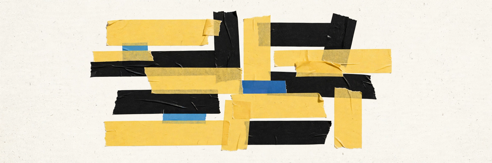
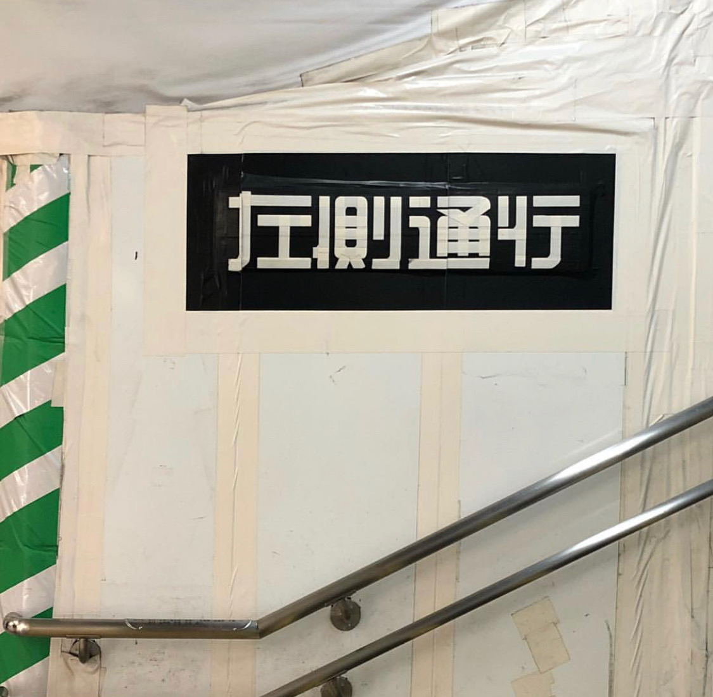
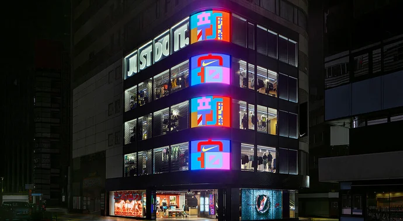
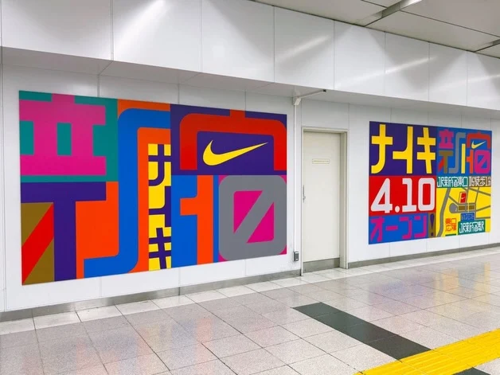
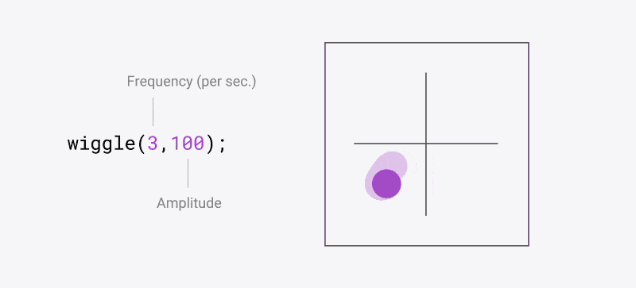
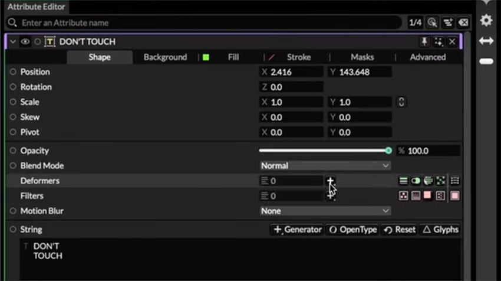

ニュース
今日のハイライト
- トップはMidasの手作りストップモーション第2弾。Geicoも広告アイコン4体をストップモーションで集結させ、ホリデー広告の主戦場が「1コマずつ作る手仕事」に寄った一日。
- 広告＋モーション系は5本で約7割。実写＋AIで「座り心地＝無重力」を見せる椅子広告と、iPadだけで描いたJacob CollierのMVという、対照的な制作フローが並ぶ。
- その他は、音節で段々にずれるPentagramの楽団ワードマークと、考古学の「選外品」を素材に変える展覧会。今日の通奏低音は「フレームと、段差」。
1. 北極の整備士たちが帰ってくる、Midas『A Midas Christmas Miracle』
Where Eagles DareとPocket Universeによる、自動車整備チェーンMidasの3部作ストップモーション・キャンペーン第2弾。マーモット、イエティ、セイウチ、くるみ割り人形という北極の整備士たちが、手作りのキャラクターとミニチュアセットを1コマずつ動かす伝統的な手法で描かれる。原案の一部は『賢者の贈り物』で、「贈り合うこと」自体をブランドの職人仕事と重ねる構成。メイキング映像も同時公開され、ミニチュア制作の精度そのものが「整備士の技」の比喩として機能する点が上手い。
2. PETAが英国クリスマス広告の文法を借りて、食卓の裏側を問う『Lonely This Christmas』
Small Family Business制作、Park PicturesのMatt Houghton監督によるPETA UKの60秒フィルム。従来のショック訴求を封印し、英国クリスマス広告の定番である「温かさ・再会・帰郷」の文法をそのまま借りて、視線を食卓に上る動物たちの家族へ反転させる。11月23日にオンライン公開、英国内の映画館でも上映。ジャンルの型を借りてメッセージだけを差し替える、広告の「文法の転用」の見本として読める。
3. Geicoの広告アイコン4体が集結する、初のホリデーフィルム
米保険Geicoが、Gecko、Caveman、Maxwell the Pig、Caleb the Camelという歴代の広告キャラクターを一堂に集めた初のホリデーフィルムをストップモーションで制作したというニュース。長年積み上げたキャラクター資産を「同窓会」として再編集し、手作りアニメーションの質感でまとめ直す手法は、IP化した広告資産の使い方として注目できる（Ad Ageの記事本文は会員向けのため、詳細は概要紹介に基づく）。
4. 座り心地は見えない。だから「無重力」で見せる、W. Schilligの椅子広告
ライプツィヒのFrameScale（2025年創業）がSTASH初登場で手がけた、独家具ブランドW. Schilligの新シート技術nanoSOFTとCloud9アームチェアのキャンペーン。戦略から制作までを一貫して担い、実写とAIを tactile に混ぜる。「座り心地は目に見えないので、感じる様子を見せる」という転換のもと、キーワードは「無重力」。製品紹介から「感覚の広告」へ舵を切ったブランドの転機として紹介されている。
5. 紙の時間がなかった。だから全編iPadで描いた、Jacob CollierのMV
アニメーターMarie Lavisによる、Jacob Collier『Where Did My Diamond Go?』のアニメーションMV。手に入らないものを追い続けるキャラクターの話を、音楽の多様な音そのものを視覚言語に翻訳して描く。紙で描く時間が確保できず全編をiPadで制作したことが、かえって新しいワークフローの実験になったという。昨日のCatherine Lepage（紙の手描き）に続く「制作メディアが表現を決める」系譜の、デジタル側の1本。
6. 音節で4段にずれるワードマーク、PentagramによるPhilharmonia刷新
ロンドンのフィルハーモニア管弦楽団の80周年に向け、Pentagramが手がけたアイデンティティ刷新。DinamoのABC Oracle Blackを基に、「Phil／har／mo／nia」と音節ごとに左右へずらして積む段々型ワードマークを主役に据えた。この積み重ねを下地（ベースレイヤー）として、シーズンごとに大きなライラックの文字や金色の「80」を重ねても崩れない設計。温かみのある赤1色が、プログラム、トラック、トートバッグまでを束ねる。タイポグラフィだけで「積み重なる音」を作る好例。
7. 考古学の「選外品」が素材になる、Ex Situ展
オランダのデザイナーMarisa Klasterと考古学者René Isarinによるプロジェクト。発掘品のうちアーカイブに選ばれず、本来は廃棄される「選外品」――4万年前のマンモスの骨、14世紀の船材、ハドリアヌス帝時代のローマ街道の木杭――を9人の作り手に渡し、新しいモノに作り替える。木杭をハイヒールのヒールに、600年前の船材を小箱にするなど、素材の来歴そのものがデザインの核になる。2027年2〜3月にハーグのSee Labで本展開催予定。素材の「格下げと転生」という視点が、プロダクトデザインの参考になる。
特集 ― デザイン特集マガジン・第9号

下書きなし、カッター一本
――佐々木俊が「修悦体」をNIKE SHINJUKUの顔にした理由
駅の工事壁に貼られた、ガムテープの案内文字。それが2026年4月、新宿駅東口のナイキ新店舗「NIKE SHINJUKU」のストアロゴになった。手がけたのは警備員の佐藤修悦と、グラフィックデザイナーの佐々木俊（AYOND）。これは「素人の手仕事をブランドが借りた」という美談で終わらない。佐々木が16年前に一目で見抜いた造形の強さを、どうやってグローバルブランドのロゴとして成立させたか――その編集の技術を解剖する。
勉強ポイント
- 素材の制約が字形になる：テープの幅＝線の太さ、カッターの切り口＝角の丸み。道具が決めた形は、PCで「手書き風」を装うのとは別物。素材から逆算して造形を決める発想は映像の実写素材にも使える
- 見つける目がアートディレクションになる：佐々木の仕事の起点は作ることではなく、駅で「この文字、おもしろい」と止まったこと。日常の造形を拾えるかどうかが、企画の独自性を決める
- 往復で磨く：テープで作る→デジタルで提案する→またテープで作り直す。アナログとデジタルを一往復で終わらせず、手の側に何度も戻すことで「らしさ」を殺さずに洗練させている
1. 修悦体 ― イライラを解くために角を丸くした文字
修悦体の始まりは2004年ごろ。工事で「巨大迷路」のようになったJR新宿駅で、警備員の佐藤修悦が道案内に口頭では限界を感じ、現場の粘着テープを裂いて廃材パネルに貼り、案内表示を作り始めた。
造形の核は二つある。ひとつは下書きをせず、テープを格子状に貼ってからフリーハンドでカッターで切り出す作り方。太さも形も整理しきれないため、同じ文字でも毎回「ノリで形が変わる」。もうひとつは、利用客に怒鳴られた経験から加えた「一手間」――文字の角を丸く削ることだ。少しでも不満やイライラを解消できれば、という思いやりが、そのまま字形の特徴になった。ルーツは高校の美術で見たゴシック体の直線の美しさで、デザイン教育を受けたことのない佐藤が、報告書をゴシック風に手書きし続けてきた蓄積が下地にある。
つまり修悦体の丸みは、かわいさの演出ではない。読み手の感情への配慮が、カッターの動きを通して形になったものだ。2025年には日本サインデザイン賞で「佐藤修悦氏が生み出す道しるべ『修悦体』」として特別賞・プラチナを受賞している。

クレジット：Spoon & Tamago（https://spoon-tamago.com/shuetsu-sato-signage/）
写真を見ると、横線が複数の文字を貫き、角がことごとく落とされているのが分かる。均一な線幅と丸い角が、工事現場の殺伐とした仮設壁の中で、異様に優しく、しかも遠くからでも読める。この「優しいのに強い」が修悦体の正体である。
2. 16年越しのファンが、起点になった
佐々木俊は2010年に多摩美術大学グラフィックデザイン学科を卒業し、アドブレーン、グリッツデザインを経て2016年にAYONDを設立。2020年にJAGDA新人賞を受賞している。その佐々木が佐藤の文字と出会ったのは卒業直後、JR日暮里駅だった。「何でもコンピューターで作れる時代に、ぶこつなガムテープで作った文字には、ユニークさや、おちゃめさがあり、魅力的。コンピューターでは絶対に生まれない形だと思った」と語り、すぐにファンになったという。
だからNIKE SHINJUKUのアートディレクターを任されたとき、「新宿といえば、僕の中では佐藤修悦さんがすぐ思い浮かびました」「新宿駅の利用者にもなじみがあり、新宿にふさわしい」と抜擢したのは、奇抜な話題作りではない。16年間、ひとつの造形を見続けてきた人間が、場所の文脈に最も合う文字を選んだ、という判断である。土地の記憶を背負った既存の造形を使うことは、ゼロからロゴを作るより速く「その場所らしさ」に届く。
3. NIKE SHINJUKU ― スウッシュを「宿」の一画に埋める
2026年4月10日にオープンしたNIKE SHINJUKUのロゴは、佐藤が粘着テープで制作した「新宿」の文字をベースに、佐々木がアートディレクターとしてデザインした。見どころは、「宿」の一画にナイキのスウッシュが刺さる構成だ。グローバルブランドの象徴を、テープ文字の側に「一画として」紛れ込ませることで、ロゴ同士が並ぶのではなく、一つの字形に融合している。
制作は「往復書簡」のようだったと報じられている。夜勤明けの佐藤が「新宿」をテープでいくつも作って見せ、佐々木が「この線は斜めにしたらどうでしょうか」とPCで手を加えて提案すると、佐藤がまたテープで再現してくる。1カ月以上に及んだこの往復で佐々木が肝にしたのは、「修悦体の骨格を生かしつつ、デザインとして洗練させていくバランス」。デジタル側で完結させれば角の揺らぎは消え、テープのままではロゴとして再現性が持てない。その中間を、手の側に何度も差し戻すことで探ったわけだ。佐藤はいつも頼んだものの倍ぐらい作ってきたといい、佐々木は「作ることへの欲求がすごい。かなわないなと、より尊敬が増しました」と振り返っている。
完成したロゴは、店舗の4フロアを貫くデジタルサイネージや駅の巨大広告（高さ2メートル、幅3.2メートルのシート2面）で展開され、カスタムサービス「NIKE BY YOU」の店舗限定デザインにも選べる。仮設の案内表示として生まれ、出ては消えていた文字が、街のランドマークの顔として残ることになった。

クレジット：Photo: Nike via Type Travel Diary（https://www.typetraveldiary.com/places）

クレジット：Spoon & Tamago掲載写真（https://spoon-tamago.com/2026/）
告知ポスターでは、修悦体の骨格が多色の平色で巨大に引き伸ばされている。色が変わり、サイズが変わっても、角の丸みと線の貫き方で「あの駅の文字だ」と分かる。字形の個性が色やサイズから独立して強いことの証明であり、ロゴとして機能する条件でもある。
なお佐々木自身の作家性は、自主制作のポスター《HUMAN》（2021年、3点組）でも確認できる。タイトル以外の文字情報をほぼ排し、人の姿を凝縮したグラフィックそのものが文字のように見える表現で、2024年の世界ポスタートリエンナーレトヤマで銀賞を受賞した。審査講評は「言葉を超えた視覚のメッセージ」と評している。文字と身体のあいだを探るこの感覚が、修悦体という「身体の動きが残る文字」に惹かれた理由と地続きなのだろう――これは筆者の分析である。
駅で迷う人を助けるために切られたテープが、世界ブランドのロゴになる。そこにあるのは偶然ではなく、見つける目、16年の持続、そして手の形を殺さない編集の技術である。
出典
- 「ガムテープでいいんですか？」警備員にナイキのロゴが任された理由：朝日新聞withnews https://www.asahi.com/articles/ASV4R061CV4RDIFI00JM.html?iref=ogimage_rek
- Security guard, 72, behind design of Nike's new Shinjuku store | The Asahi Shimbun https://cdn-ssl.asahi.com/ajw/articles/16534412
- Tokyo Tape Type: From the Underground to the Flagship Store | Type Travel Diary https://www.typetraveldiary.com/places
- Dialogue of Print｜本屋青旗（佐々木俊プロフィール） https://aohatabooks.com/blogs/exhibition/dialogue-of-print
- IPT2024 第二次審査 審査講評｜富山県美術館 https://tad-toyama.jp/wp-content/uploads/2023/09/2b68fa5ca4c629e70718ac151a96bc02.pdf
- The 14th International Poster Triennial in Toyama 2024 Prize Winners https://tad-toyama.jp/en/wp-content/uploads/2023/09/IPT2024_Prize_en.pdf
- NIKE SHINJUKU、あす4・10オープン｜ORICON NEWS https://www.oricon.co.jp/news/2447562/full/
- 佐藤修悦｜Wikipedia（修悦体の来歴・受賞歴の確認用） https://ja.wikipedia.org/wiki/%E4%BD%90%E8%97%A4%E4%BF%AE%E6%82%A6
AE／Cavalry チュートリアル・表現コーナー
ループを手で繰り返さない
AEは切れ目のないwiggleとパスのループ、Cavalryは触ると文字が逃げるリアクティブ表現
切れ目なくループするwiggle ― Top 3 After Effects Expressions to Simplify Your Workflow

①通常は継ぎ目が出るwiggleを、2つのwiggleをlinearでつないでループ化、②loopIn()+loopOut()-valueで前後両方向ループ、③loopOutが効かないPathプロパティ専用のvalueAtTimeループ——の3つを、コピペできるコード付きで解説する実用記事。
表現ポイント：核は「繰り返しをキーフレームで増やさず、式で閉じる」こと。SNS用のループGIFや背景の浮遊要素、エンドレスな波形・線画で、尺が変わっても打ち直しにならない。
手が近づくと文字が逃げる ― Is Cavalry the end of After Effects?

Cavalry入門コースの中で、TextにSub-Mesh Deformerを入れ、PositionにGet Vectorをつないで「指す手」の画像から文字一字ずつが逃げるリアクティブタイポを作る章が秀逸。強さ1000に式で×30を重ねる増幅の仕方まで手順で見せる。
表現ポイント：核はSub-Meshで文字を子メッシュ単位に割る＋Get Vectorで外部対象との距離を動きに変える発想。マウスや手に反応するWeb／展示向けモーション、触発されるタイトル演出に応用できる。
今日試すなら：まずAEのループwiggleから。手持ちの浮遊アニメーションに貼るだけで、ループの継ぎ目チェックから解放される。